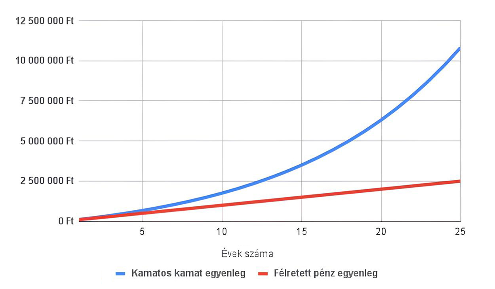
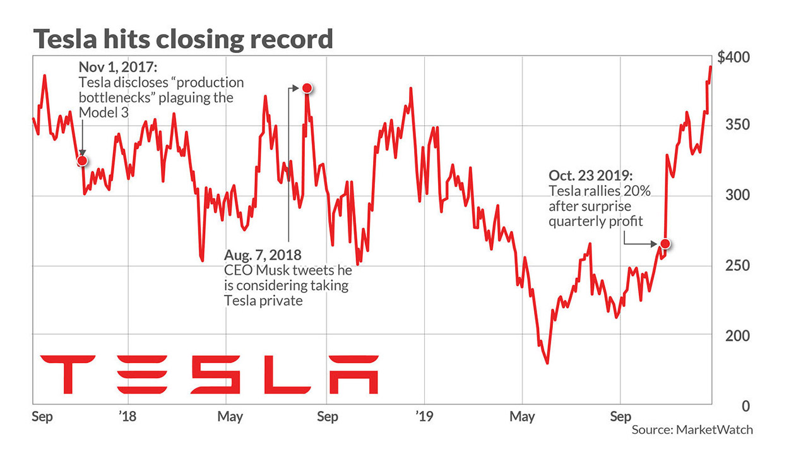

Ez az oldal áttekintést ad a legfontosabb befektetési formákról: a részvényekről, a kötvényekről, az állampapírokról és a banki befektetési jegyekről. Ezen kívül bemutatom az értékpapír-számlákat és hoztam néhány tippet, valamint néhány gondolatot 2 ismert befektetőről.
Először is tisztázzuk: mit nevezünk befektetésnek? Befektetésnek nevezzük egy adott pénzmennyiség felhasználását különféle eszközök megszerzésére, hogy nyereséget érjünk el.
A kamatos kamat ereje
A kamatos kamat lényege, hogy a hozam nem csak a tőkéből, hanem a korábban megszerzett hozamokból is hozamot termel - ez idővel exponenciális növekedést eredményez. A kamatos kamat vagyonépítő erejét legjobban a befektetések segítségével használhatjuk ki. Számold ki a kalkulátorunk segítségével az erejét!

Grafikon a kamatos kamatról - exponenciális növekedés
Kötvények
A kötvények hitelviszonyt testesítenek meg, tulajdonképpen egy kölcsön: a kibocsátó (vállalat vagy állam) ígéretet tesz a tőke visszafizetésére és kamatfizetésre. Kiszámíthatóbb, általában alacsonyabb kockázatú eszköz.
A kötvények likviditása és kockázata nagyon eltérő lehet - rövid lejáratú pénzpiaci papíroktól a hosszú futamidejű vállalati kötvényekig.
Állampapírok
Az állampapírok speciális kötvények, melyek mögött az állam áll - ezért általában a legbiztonságosabbnak tekinthetők. Jó választás konzervatív portfóliókhoz, illetve likvid tartalékoknak.
Példa: lakossági állampapírok, diszkont kincstárjegyek, államkötvények különböző futamidőkkel. Érdemes megnézni a Magyar Állampapír oldalát további információkért.
Részvények
A részvény olyan értékpapír, ami tulajdonjogot jelent egy vállalatban. Lehetővé teszi a növekedésből való részesedést, de magasabb kockázattal jár, különösen rövid távon. Leggyakrabban tőzsdéken lehet őket vásárolni.

A részvény szóról sokaknak a TESLA jut eszébe
Fontos tudnivalók a részvényekről:
Hogyan lehet profitálni: árfolyam-emelkedés, osztalék
Kockázatok: piaci volatilitás, cégspecifikus események
Az banki befektetési alapok lehetővé teszik, hogy kis tőkével is különböző eszközökbe fektess be. Ezek az alapok különböző kockázatú és hozamú eszközökbe, például részvényekbe, kötvényekbe vagy pénzpiaci termékekbe fektetnek. Választhatsz kockázatosabb részvényalapok és konzervatívabb kötvényalapok között.
Figyeld az alap költségeit (kezelési díj, belépési/kilépési díjak), mennyire aktívan kezelt, illetve a múltbeli hozam helyett inkább nézd a költség-hozam arányt.
Értékpapírszámlák
Értékpapírszámla szükséges a részvények, kötvények és befektetési jegyek vásárlásához. Bankok és brókercégek kínálnak ilyen számlákat, különböző díjakkal és szolgáltatásokkal.
Számlatípusok: hagyományos értékpapírszámla, kereskedési számla, TBSZ (Tartós Befektetési Számla)
Mire figyelj: tranzakciós díjak, számlavezetési költség, platform funkciók, adókezelés
Warren Buffett és Peter Lynch
Warren Buffett
Warren Buffett a Berkshire Hathaway vezetőjeként vált legendává. Már 11 évesen megvette élete első részvényét és 13 évesen készítette el első adóbevallását. Értékalapú befektetései, hosszú távú szemlélete és türelme legendás. A befektetési döntéseinél a türelem a legnagyobb fegyvere, gyakran mondja, hogy „a piac türelmetlenektől a türelmesekhez irányítja a pénzt”. Évente csupán néhány nagy ügyletet hajt végre, mégis ő a világ egyik legsikeresebb és legelismertebb befektetője.
Peter Lynch
Peter Lynch minden idők egyik legsikeresebb alapkezelője, aki 1977 és 1990 között a Fidelity Magellan Fundot irányította és évente átlagosan kb. 29%-os hozamot ért el.
Befektetési filozófiájának központi eleme a „buy what you know” - vagyis „vásárold azt, amit ismersz”, amely szerint a hétköznapi életben látott trendekből is lehet kiváló befektetési lehetőségeket felismerni.
Mindig egyszerű, közérthető szemléletet képviselt és arra bátorította a befektetőket, hogy ne bonyolítsák túl a döntéseiket, hanem a józan ész alapján válasszanak részvényeket.
Warren BuffettPeter Lynch
A befektetés alapszabályai
Diverzifikáció: ne helyezd egyetlen eszközbe az összes tőkéd.
Hosszú táv: a piacok rövid távon volatilisek, a türelem megtérül.
Kockázatkezelés: ismerd meg a saját kockázattűrésedet és alakítsd ennek megfelelően a portfóliód.
Költségek minimalizálása: az alacsony díjak hosszú távon jelentősen növelhetik a nettó hozamot.
Folyamatos tanulás: tartsd magad naprakészen, de kerüld a túlzott piacfigyelést.
Tervezés: határozd meg a céljaidat (pl. nyugdíj, lakásvásárlás) és az időtávot.
Időzítés: kerüld a piac időzítésére vonatkozó kísérletezést.
Érdekességek a befektetések világából
A hosszú táv a legnagyobb „szupererő”: a kamatos kamat miatt
A világ leggazdagabb befektetői közül sokan nagyon egyszerű életet élnek, pl. Warren Buffet is
A Bitcoin piaca nagyobb, mint sok ország GDP-je
A tőzsde pszichológiai játék, nem pénzügyi, a befektetők kb. 80%-a érzelmi alapon hozza meg a döntéseit
A legtöbb profi befektető sem tudja tartósan megverni a piacot